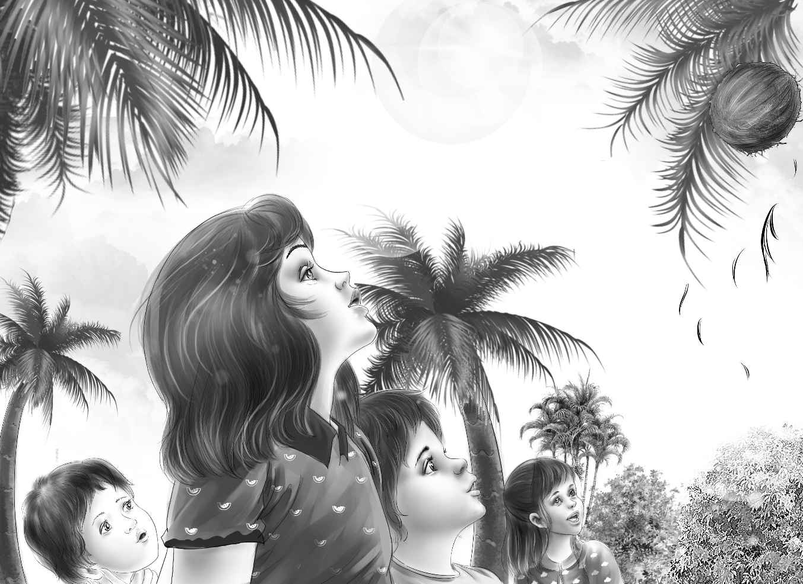

Mr. Alden woke first. He lay very still. He thought to himself,"Breakfast will be strange for me. No coffee. I must learn to get along without my morning coffee." Then he went to sleep again.
Soon he was awake. He sat up and looked around. He was alone. Lars was gone,and the boys were gone. Then Mr. Alden smelled something. He got up at once and went to the door.
Down on the beach Lars had a fire. Henry and Jessie and the two boys were kneeling down putting on sticks. Violet sat on a rock with a smile on her face. And what was on the fire? A coffeepot!
Mr. Alden walked down to the beach as fast as he could. Everyone began to laugh.
Benny shouted,"Surprise! Surprise! Aren't you surprised,Grandfather?"
"I never was so surprised in my whole life!" cried Mr. Alden. "And am I delighted to have my coffee!"
"So am I," said Lars. He winked at Mr. Alden. "I was going to give it up too."
Mr. Alden sat down on a rock. "Now which of you thought of my breakfast coffee? I'm going to guess."
Mike put his hand on Mr. Alden's knee. "You will guess right the first time," he said.
"Violet," guessed Mr. Alden. "That was her secret. The coffee and the coffeepot were in the big bag."
"Right!"said everyone except Violet,but she looked very happy.
Suddenly Benny said,"I see you opened the box of sea biscuit,Mike."
"I did not!" cried Mike. "I never touched the sea biscuit!"
"You didn't?Well,somebody did," said Benny.
"I noticed that,too," said Lars. He looked at all the children. "The box was open this morning."
They all said they had not opened it.
"Some of the crackers were gone," said Lars. He looked hard at Mike.
"I didn't touch the box,Lars," cried Mike. "Honest! Really. I don't like crackers too much. And I'd tell you if I wanted something to eat."
"Yes,you would,Mike," said Violet kindly.
But Lars still looked at Mike.
Henry looked at Benny. "Tell me,Benny,how did you know the box was open?"
"I couldn't have toast for breakfast," said Benny,"and I thought maybe crackers would be good. So then I saw the box was open."
"I never opened it!" shouted Mike.
"I know you didn't,Mike," Benny went on. "But Lars,you don't know Mike as well as I do. He would never take anything like that—never,never,never,never—"
"That's enough nevers,Ben," said Henry looking up. "We believe you."
"Lars doesn't," said Benny.
"No," said Henry. "But he will very soon. He doesn't know any of us too well,remember!"
Lars said to Mike,"I know you better now. They all stand up for you,so I know you didn't take the crackers."
"Good!" said Mike. "Thank you,Lars. I really,really didn't."
"Let's not talk about it any more," said Henry. "What are we going to do today,Lars?"
"We ought to explore the island," said Lars. "I want you to see the spring where the water comes from. Be careful of the coconuts. They may fall on your head. If you hear one coming from the trees,you must get out from under fast."
Soon the shells and cups and coffeepot were washed in the ocean. There were no beds to make. So they all followed Lars into the dark,green woods where the ferns grew. It was a hard walk,and after a while Mr. Alden sat down on a rock to rest. He said,"You go along. I'll stay here till you come back."
"Won't you be lonesome,Grandfather?" asked Violet. "I'll stay with you."
"No,my dear," said Mr. Alden. He smiled at Violet. "You go along with the others. I'll be all right."
So they all climbed over the rocks and through the bushes until Henry said,"Listen! Water!"
Then they came to the spring. It was like a big round bowl in a rock. It was full of clear,cold water. The water came from a white waterfall which filled the bowl. Then it flowed over in another waterfall. Benny climbed above it to sit down. He found himself sitting on a beautiful curved rock covered with moss.
"Oh," said Violet,"what a beautiful big rock. Isn't it funny? How could it come here all by itself? I don't see another rock anywhere around that's like it."
"Well," said Benny,"it looks like a great big enormous nose!"
Lars looked at it and said,"Benny,I think it is a nose. I never noticed it when I was here before. But I think it is part of an old statue. The people on Easter Island made hundreds of enormous statues. Nobody knows why they made so many. This looks like the noses on their statues."
"It fell down," said Benny. "It must be very big. This nose is twice as long as I am. Let's look for a mouth and some eyes."
Henry called,"I think the eyes are over here!"
"My,what a big statue!" said Mike. "Maybe a hundred feet long."
"Maybe," said Jessie. "I wonder who made it."
"I don't know," said Lars. "But this was a temple. You may be sure of that."
"Long,long ago," said Benny. "Let's have a drink out of the waterfall."
Benny drank first and then he climbed down from the big nose. As he did so,he saw a shell. He did not say a word. But he thought to himself,"What a funny place for a big shell. And it is clean,too. It looks like a water cup."
Benny left the shell right where it was. He said,"It's beside the white stone. I'll remember."
Just then he saw Jessie looking up into the tall trees. He looked up,too. The wind was not blowing at all,but one tree was moving. There was a crash,and down came a coconut.
"That's funny!Here's a coconut!"said Lars. "It isn't even ripe."
He looked up but he saw nothing.
He began,"Jessie,you know—" Then he stopped.
"What were you going to say,Lars?" asked Violet softly.
Lars looked at the gentle little girl. He did not want to frighten her. So he said,"Nothing,I guess. I was so surprised to see a coconut fall here. It is so dark in here that the coconuts are not ripe yet."
Mike looked at Benny. Benny looked at Mike. They both thought Lars was going to say something else. But they did not say a word. They did not want to frighten Violet,either.
"We'll go back," said Lars. "It is shorter walking on the sand than through the woods. Then we'll soon see your grandfather."
They did find it easier to walk on the hard sand. Sometimes there were piles of rocks,but it was fun to climb over them,too.
"There is another sea pool," said Henry. He bent over and looked in.
"Oh,look!"cried Benny. "Do look at this!" He was sitting on a rock looking down into the clear water.
Everyone jumped over the rocks and looked.
"What do you know!" said Henry.

The pool was filled with white sand under the clear water. But on the sand was a pattern of stones. In the middle was a beautiful white stone,perfectly round. There was a border of red stones around this. Four big pink stones were laid on the four sides. Between the pink stones were black ones. And around the edge was a beautiful border of three colors. These stones were red,white and blue,red,white and blue!
For a minute nobody spoke. And then it all came out. Benny said it."There's a mystery here!That didn't just happen for nothing! Somebody made it!"
So at last everyone was thinking the same thing,"Somebody is on this island."